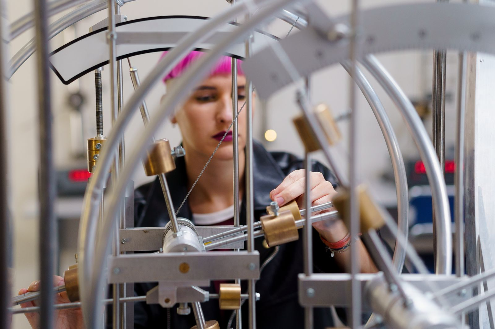

41
environment surveys & baseline maps delivered
Calibration log · Entry 214 · Atomic magnetometry
I am Dr Elias Brandt, an atomic-magnetometer specialist in Jena. I design optically pumped magnetometer (OPM) instruments and arrays for geophysics and UXO survey support, space-weather monitoring, and biomagnetic research instrumentation. The order of work is fixed: survey the environment first, then write the noise budget, then — only then — specify the sensor.
Every sensitivity figure on this site is printed with the room it was measured in. A femtotesla headline without an environment is a horoscope.
Same sensor, same datasheet — a ≈4,000× spread set entirely by the room. Sensitivity is a system property: sensor + room + neighbours.

The instrument, opened up
An optically pumped magnetometer does not measure a field directly. It counts how fast rubidium atoms precess in that field — the Larmor frequency — and divides by a constant of nature. Both directions of that division are below, with the workings printed. Step the values; nothing is hidden in a black box.
What the counter on the bench actually reads.
The field you want to plan around — a site, a room, a target.
Printed magnitudes, converted with the same constant. The row your result lands in is lit.
Services register
Five services, in the order they usually happen. The first one is deliberately not a sensor.
Fees, printed
Rates are the rates. The estimator below reads them from this printed table — change the days and watch the same arithmetic the invoice will use.
| Line | Basis | Rate |
|---|---|---|
| Engineering & design | Array design, room specification, budgets | €1,450 / day |
| Field survey & baseline | Site logging, mapping, survey crew of one | €1,150 / day |
| Array hire, 8-channel | Calibrated ⁸⁷Rb array with logger, per week | €2,800 / week |
| Calibration & written report | Fixed per engagement, includes the noise budget | €1,900 fixed |
The conclusion. A survey that finds your anomalies are your own fence costs the same as one that finds what you hoped for. Six clients have paid full price for a smaller specification than they asked for — that is the service working.
From the field files
A UXO survey contractor's map lit up with 214 anomalies. A baseline re-survey found the pattern traced the client's own buried services cable, a steel fence line and the site generator. The corrected map cut the dig list to 37 — and the full file, with its numbers, is on the Field files page.
“Brandt's report told us our expensive new map was photographing our own fence. It also told us exactly which 37 anomalies were real. That is the only kind of honesty worth paying a day rate for.”
One form, one email address, a reply within two working days — beginning with questions about your site, not a catalogue.